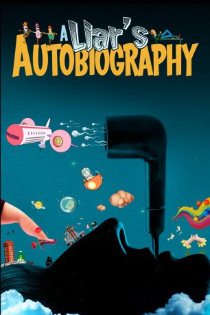
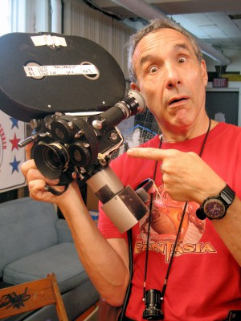

#6233 A Liar's Autobiography: The Untrue Story of Monty Python's Graham Chapman
 
 IMDB-Wertung: 5.9 / 10
IMDB-Wertung: 5.9 / 10  Metascore: 0
Metascore: 0 
A LIAR'S AUTOBIOGRAPHY ist die Verfilmung der bewegenden, irrwitzigen, teils erstunken und erlogenen Autobiographie des früh verstorbenen Monty Python-Mitglieds Graham Chapman. Es ist der erste Film aus dem Umfeld der Pythons seit "Ein Fisch namens Wanda."Vor seinem Tod hatte Chapman sich selbst beim Lesen seiner Memoiren aufgezeichnet (lange, bevor Hörbücher populär wurden). Mithilfe dieser Aufnahmen und in Zusammenarbeit mit weiteren Monty Python-Mitgliedern und 14 Trickfilmstudios entstand dieser einzigartige Animationsfilm. Er erzählt von Chapmans Jugend in der Provinz als Sohn eines Polizisten, von seinen Jahren in Eton und Cambridge und seiner fatalen Beziehung zum Alkohol. Von der Arbeit der Pythons auf Tourneen und bei Dreharbeiten. Und von seiner recht spät entdeckten Liebe zum gleichen Geschlecht.
Jahr: 2012
Dauer: 84 Minuten
FSK: 12
Land: England Studio: Senator FilmTonspuren:
Untertitel: Deutsch,
Auflösung: 1080p (1920x1040) Größe: 3471 MB
Genre: Komödie, Animation/Trick
Regisseur: Bill Jones, Jeff Simpson, Ben Timlett
Drehbuch: David Magee
Soundtrack:
Darsteller:
 Graham Chapman als Graham Chapman / Narrator
Graham Chapman als Graham Chapman / Narrator John Cleese als John Cleese / Exploding Don / David Frost
John Cleese als John Cleese / Exploding Don / David Frost Terry Jones als Terry Jones / Graham's Mother / Biggles / Anatomy Don / Enormous Peter
Terry Jones als Terry Jones / Graham's Mother / Biggles / Anatomy Don / Enormous Peter Michael Palin als Michael Palin / Graham's Father / Interview Don #1 / Hibbern / Queen Mother
Michael Palin als Michael Palin / Graham's Father / Interview Don #1 / Hibbern / Queen Mother Terry Gilliam als Interview Don #2 / Dr One Across / Pilot / Aleister Crowley / Jose
Terry Gilliam als Interview Don #2 / Dr One Across / Pilot / Aleister Crowley / Jose Carol Cleveland als Masseuse / Singing Telegram / Stewardess
Carol Cleveland als Masseuse / Singing Telegram / Stewardess- Philip Bulcock als David Sherlock
 Stephen Fry als Oscar Wilde
Stephen Fry als Oscar Wilde-  Lloyd Kaufman als Uncle Lloyd
 Tom Hollander als
Tom Hollander als  Cameron Diaz als Seigmund Freud
Cameron Diaz als Seigmund Freud Ronnie Corbett als Thompson , archive footage, uncredited
Ronnie Corbett als Thompson , archive footage, uncredited- David Frost als Himself , archive footage, uncredited
 Eric Idle als Himself , archive footage, uncredited
Eric Idle als Himself , archive footage, uncredited- Justin McDonald als Young David Sherlock , uncredited
- Michael Parkinson als Himself , archive footage, uncredited
- Rob Buckman als
- Jamielisa Jacquemin als
- Diana Kent als
- Peter Dickson als
- Margarita Doyle als Vomiting Sylvia Krystel
- André Jacquemin als Himself , uncredited
Datei: X:\Person\Monty Python\Liar's Autobiography The Untrue Story of Monty Python's Graham Chapman, A (2012, FSK12, 1920x1040).mkv seit 22.05.2017
Festplatte: HD Collection-7+mehr(A-Z)+Person
 Es gibt insgesamt 11 Filme in der Gruppe 'Person\Monty Python'
Es gibt insgesamt 11 Filme in der Gruppe 'Person\Monty Python'